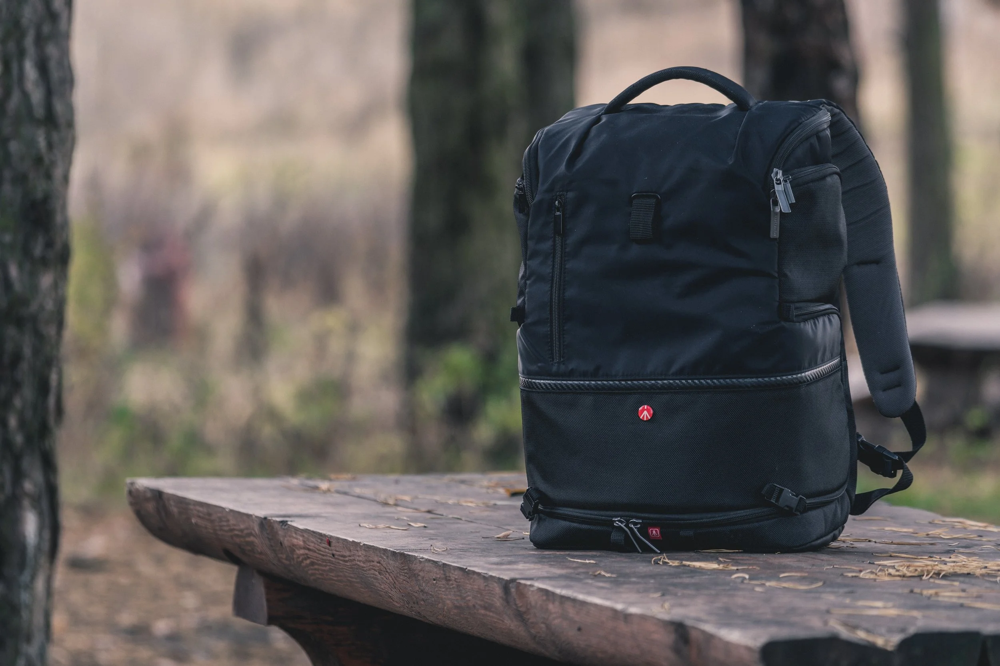
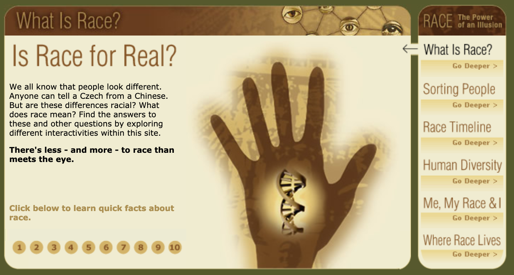
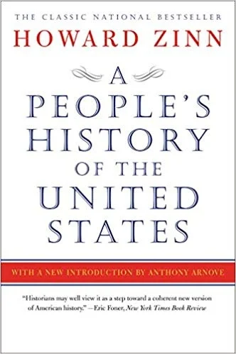
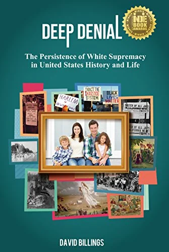

2019-03-12
Getting Started On The Journey Toward Becoming A White Anti Racist
This month I am going to start sharing some of the resources that helped me get started on my journey towards becoming a white anti-racist; a journey that continues. One of the hardest parts of this journey for me was having to look at the many ways in which I was unconciously (and maybe a little conciously) complicit in perpetuating racism. My world has been turned upside down and inside out and I think I am becoming a better human being because of it.
Here are a few resource that I think are helpful for people just getting started.

This is a great place to start- it’s short, powerful and to the point. This article helps us to begin to look at the unearned and often invisible (to us) privileges that we hold as white people This is one of the first articles that I read when I was beginning my journey towards anti-racism. The biggest thing that I personally learned from this article is how completely UNAWARE I was of what it meant to be white in this country. This changed my perspective because it forced me to stop taking things for granted, and helped me to see racial inequities more clearly.

This is a three- part video series produced by PBS that takes a deep look at the roots of racism in the United States using real stories and narratives. The third episode of this video series, “The House we live in” provided me with a much better understanding of the ways in which decisions and laws made by the government and people in power sytematically oppressive People have Color and perpetuate racism again and again. I learned more about redlining and lending practices that give more unfair advantages to white people. The website is full of resources that will help you learn and are great to share with others, including kids.
Below is a clip from the documentary to get you started!
Embedded media (requires internet): https://player.vimeo.com/video/133506632?app_id=122963&wmode=opaque

I’m currently reading this book for the second time. What I love about this book is that it tell us the stories of history that we should have been taught in school and were not. One of the biggest lessons I learned from this book is how distorted our view of history is. Our understanding of history only glosses over the true devastation caused by the greed, fear and ignorance of white supremacy. You’ll never look at history the same again.

Not only do I love this book, but I’ve had the honor of meeting David Billings and he is wife and Marjorie Freeman . They have both been part of the people’s institute for years, and in this book David shares his personal story of growing up in the Civil Rights era. He talks about growing up in the South and coming to terms with racism and white supremacy, and dedicating his life to dismantling them.
The First Step is to Get Educated
It is difficult to dismantle a lifetime of beliefs. I know, because I’m still trying to do it, 5 years into waking up and having the blindfolds removed . I hope that these resources will help you to begin your own journey, one that is well worth the effort. To go deeper, definitely check out the Undoing Racism and Community Organizing workshop at The People’s Institute of Survival and Beyond.
This workshop CHANGED MY LIFE FOREVER
Please reach out if you have any questions or suggestions